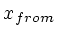
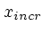
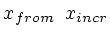
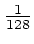
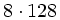

If plt's argument list includes only one column-number, plt reads the y values (the ordinates) from that column of the data file. In this case, if the data file contains more than one column, plt reads the x values (the abscissas) from column 0. If the data file contains only one column, plt automatically supplies the abscissas. The automatically generated abscissas can be referred to as column 0, and the ordinates become column 1.
If you have multi-column data that lacks abscissas, you can force plt to generate a column of abscissas using the -cz (column zero) option. When you use -cz, your data columns are renumbered, so that the first one (which would normally be called column 0) becomes column 1, the second becomes column 2, etc.
When plt supplies the x values, it creates a column of x values starting with  (by default, 0), and incrementing by  (by default, 1) for each subsequent value of x. The -cz option can be used to change these values, as follows:
-cz 
This feature is illustrated in figure 3.1. The data file ecg.dat contains samples of two ECG signals taken at 128 samples per signal per second, hence is set to , or 0.00781, so that the x units on the plot are seconds. Since the plot begins with row 1024 (), is set to 8, so that the x axis marks indicate the elapsed time in seconds from the beginning of the data file.